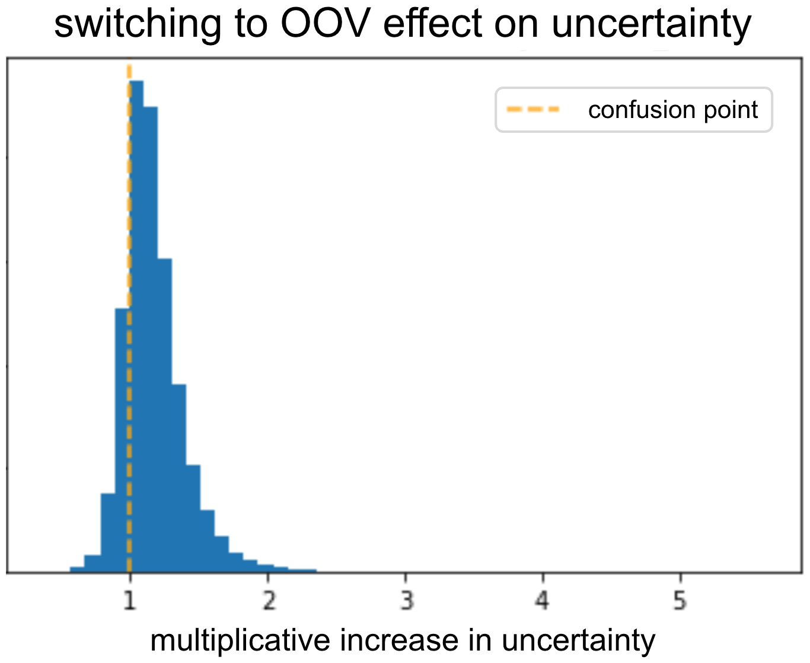
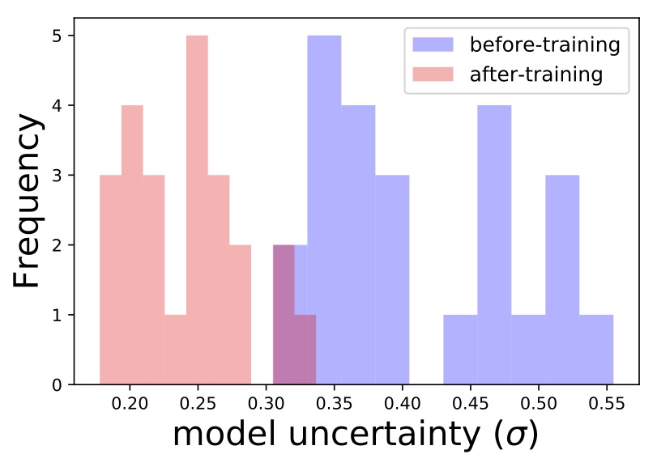

This is a joint post with Inbar Naor. Originally published at engineering.taboola.com.
As deep neural networks (DNN) become more powerful, their complexity increases. This complexity introduces new challenges, including model interpretability.
Interpretability is crucial in order to build models that are more robust and resistant to adversarial attacks. Moreover, designing a model for a new, not well researched domain is challenging and being able to interpret what the model is doing can help us in the process.
The importance of model interpretation has driven researchers to develop a variety of methods over the past few years and an entire workshop was dedicated to this subject at the NIPS conference last year. These methods include:
- LIME: a method to explain a model’s prediction via local linear approximation
- Activation Maximization a method for understanding which input patterns produce maximal model response
- Feature Visualizations
- Embedding a DNN’s layer into a low dimensional explanation space
- Employing methods from cognitive psychology
- Uncertainty estimation methods – the focus of this post
Before we dive into how to use uncertainty for debugging and interpreting your models, let’s understand why uncertainty is important.
Why should you care about uncertainty?
One prominent example is that of high risk applications. Let’s say you’re building a model that helps doctors decide on the preferred treatment for patients. In this case we should not only care about the accuracy of the model, but also about how certain the model is of its prediction. If the uncertainty is too high, the doctor should take this into account.
Self-driving cars are another interesting example. When the model is uncertain if there is a pedestrian on the road we could use this information to slow the car down or trigger an alert so the driver can take charge.
Uncertainty can also help us with out of data examples. If the model wasn’t trained using examples similar to the sample at hand it might be better if it’s able to say “sorry, I don’t know”. This could have prevented the embarrassing mistake Google photos had when they misclassified African Americans as gorillas. Mistakes like that sometimes happen due to an insufficiently diverse training set.
The last usage of uncertainty, which is the purpose of this post, is as a tool for practitioners to debug their model. We’ll dive into this in a moment, but first, let’s talk about different types of uncertainty.
Uncertainty Types
There are different types of uncertainty and modeling, and each is useful for different purposes.
Model uncertainty, AKA epistemic uncertainty: let’s say you have a single data point and you want to know which linear model best explains your data. There is no good way to choose between the different lines in the picture – we need more data!
 On the left: not enough data results in high uncertainty. On the right: given more data uncertainty reduces.
On the left: not enough data results in high uncertainty. On the right: given more data uncertainty reduces.
Epistemic uncertainty accounts for uncertainty in the model’s parameter. We are not sure which model weights describe the data best, but given more data our uncertainty decreases. This type of uncertainty is important in high risk applications and when dealing with small and sparse data.
As an example, let’s say you want to build a model that gets a picture of an animal, and predicts if that animal will try to eat you. Let’s say you trained the model on different pictures of lions and giraffes and now it saw a zombie. Since the model wasn’t trained on pictures of zombies, the uncertainty will be high. This uncertainty is the result of the model, and given enough pictures of zombies it will decrease.
Data uncertainty, or aleatoric uncertainty, captures the noise inherent in the observation. Sometimes the world itself is stochastic. Obtaining more data will not help us in that case, because the noise is inherent in the data.
To understand this point, let’s get back to our carnivorous animals model. Our model can recognize that an image contains a lion, and therefore you’re likely to be eaten. But what if that lion is not hungry right now? This time the uncertainty comes from the data. Another example is that of two snakes that look the same but while one of them is venomous, the other isn’t.
Aleatoric uncertainty is divided into two types:
- Homoscedastic uncertainty: uncertainty is the same for all inputs.
- Heteroscedastic uncertainty: uncertainty that depends on the specific input at hand. For instance, for a model that predicts depth in an image a featureless wall is expected to have a higher level of uncertainty than that of an image with strong vanishing lines.
Measurement uncertainty: another source of uncertainty is the measurement itself. When the measurement is noisy, the uncertainty increases. In the animals example the model’s confidence can be impaired if some of the pictures are taken using a bad quality camera; or if we were running away from a scary hippo and as a result we only have blurry images to work with.
Noisy labels: with supervised learning we use labels to train the models. If the labels are noisy, the uncertainty increases.
There are various ways to model each type of uncertainty. These will be covered in the following posts in this series. For now, let’s assume we have a black box model that exposes the uncertainty it has regarding its predictions. How can we use it in order to debug the model?
Let’s consider one of our models in Taboola used for predicting the likelihood of a user clicking on a content recommendation, also known as CTR (Click Through Rate).
Using uncertainty to debug your model
The model has many categorical features represented by embedding vectors. The model might have difficulties with learning generalized embeddings for rare values. A common way to solve this is to use a special Out Of Vocabulary (OOV) embedding.
Think about the advertiser of an article. All rare advertisers share the same OOV embedding, therefore, from the point of view of the model they are essentially one advertiser. This OOV advertiser has many different items, each with different CTR. If we’d use only the advertiser as a predictor for CTR, we should get high uncertainty for OOV.
To validate the model outputs high uncertainty for OOV, we took a validation set and switched all the advertisers embeddings into OOV. Next, we inspected what was the uncertainty before and after the switch. As expected, the uncertainty increased due to the switch. The model was able to learn that given an informative advertiser it should reduce the uncertainty.

We can repeat this for different features and look for ones that result in low uncertainty when replaced with OOV embeddings. Either those features are uninformative, or something in the way we feed them to the model is not ideal.
We can even go to finer granularity: some advertisers have high variability between CTR of different items, while others have items with roughly the same CTR. We would expect the model to have higher uncertainty for advertisers of the first type. A useful analysis is therefore looking at the correlation between uncertainty and CTR variability within an advertiser. If the correlation isn’t positive, it means the model failed to learn what uncertainty to associate with each advertiser. This tool allows us to understand if something went wrong in the training process or in the model’s architecture, indicating we should further debug it.
We can perform a similar analysis and see if the uncertainty associated with a specific item decreases the more times we show it (i.e. show it to more users / in more places). Again, we expect the model to become more certain, and if it doesn’t – debug we will!
Another cool example is the title feature: unique titles with rare words should incur high model uncertainty. This is the result of the model not seeing a lot of examples from that area of all possible titles. We can look in the validation set for a group of similar titles that are rare and estimate the model’s uncertainty on these titles. Then we’ll retrain the model using one of the titles, and see if the uncertainty has been reduced for the entire group. Indeed, we can see that’s exactly what happened:

Wait a second... By exposing the model to some titles it was able to get better and be more certain about a bunch of new titles. Maybe we can use that to somehow encourage exploration of new items? Well, yes we can! More on that in a following post of the series.
Final thoughts
Uncertainty is a big deal in many domains. Identifying which uncertainty type is important is application specific. You can use them in a variety of ways once you know how to model them. In this post we discussed how you can use them to debug your model. In the next post we’ll talk about different ways to get uncertainty estimations from your model.
This is the first post of a series related to a paper we’re presenting in a workshop in this year KDD conference: deep density networks and uncertainty in recommender systems.
Comments !